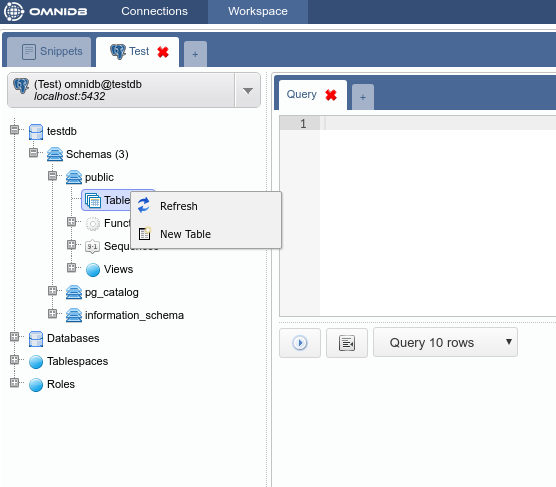
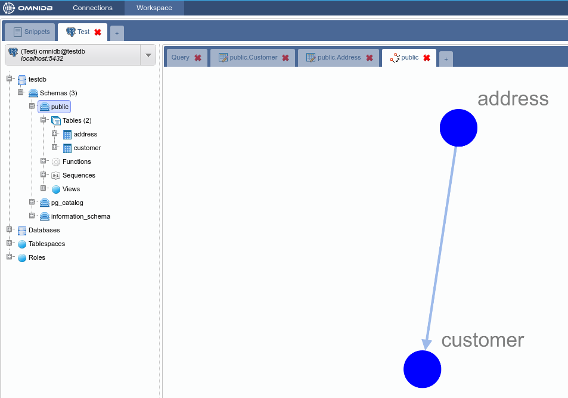
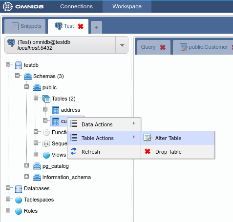

OmniDB has a table creation interface that lets you configure columns, constraints and indexes. A couple of observations should be mentioned:
We will create example tables (Customer and Address) in the testdb database we connected to earlier. Right click on the Tables node and select the New Table action:

We will create the table Customer with a primary key that will be referenced by the table Address:

Note how the table appers in the Tables tree node:

Now create the table Address with a primary key and a foreign key:


At this point we have two tables in schema public. The schema structure can be seen with the graph feature by right clicking on the schema public node of the tree and selecting Render Graph > Simple Graph:


And this is what the Complete Graph looks like:

OmniDB also lets you edit existing tables (always following DBMS limitations). To test this feature we will add a new column to the table Customer. To access the alter table interface just right click the table node and select the action Table Actions > Alter Table:

Add the column cust_age and save:

The interface is capable of detecting errors that may occur during alter table operations, showing the command and the error that occurred. To demonstrate it we will try to add the column cust_name, which already belongs to this table:

In order to remove a table just right click the table node and select the action Table Actions > Drop Table: